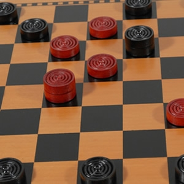

img from: www.woodexpressions.com
Go To Game Board

How to Play
- Select if playing 1 player or 2 players.
- Click one of your teams pieces, then on the spot you want to move it to.
- Jump over the other teams pieces to remove them from the board.
- Win by removing all of the other teams pieces!
Rules
- Gameboard is a 8x8 table, alternating white and black squares.
- Each Team has 12 pieces. Pieces stay on black squares at all times.
- Players move their teams pieces one square at a time diagonally.
- After one move it is the other players turn to move.
- Pieces must be moved forward in all moves, unless piece is a king.
- A piece becomes a king by reaching the furthest row of the opponents
side
- A jump happens when a piece "Jumps" over an opponents piece to get
to an open square to get to the open square behind it.
- When a jump is available, the player must jump.
- The winner is the player who has caputured all the pieces of the
opposing team
External Link
Learn About
Checkers History
Preliminary Software Design
Variables
- Num_Players = (1 or 2)
- Board Squares = White or Black (WhiteSq, BlackSq)
- Pieces = White_Team, Red_Team(RdPc, WtPc)
- PieceValues = Normal, King (RdPc, WtPc, RdPcKing, WtPcKing)
- StartingPieces = 12
- BoardStatus[8][8] //an 8x8 grid that is the layout of the board game, can use to check where each teams pieces are, and legal moves
- will need to also make items that will use 2d array to show possible moves for every position on the game board, algorithm if move position
contains piece of opposite team and move is available from that position then player has ability to jump that player.
Description of how to play.
Player will make move by clicking on a piece and moving it to a legal spot on the board.
Moving to white square will not be allowed, only able to click on black squares.
Position on board will be kept by grid number system.(2d array of ints) When object is clicked, square
is sent to first function that will make sure it contains a piece of that players
team.
Functions/Methods
- CheckPiece(position) //if CheckPiece returns true, allow player to select the square with a piece as the one to move
- CheckSquareEmpty(position) //check to see if 2nd click is an empty square, then check if the move is legal.
- CheckMove(position1,position2) //if CheckMove returns true, move is legal and game board is updated with move on HTML table
- UpdateBoard() // will update the HTML gameboard with current moves
- NewGame() // will prompt if sure want to start a new game, then set board to default settings.
- CheckWinner() //after each move check to see if either team has 0 pieces left, if no pieces left then declare a winner!